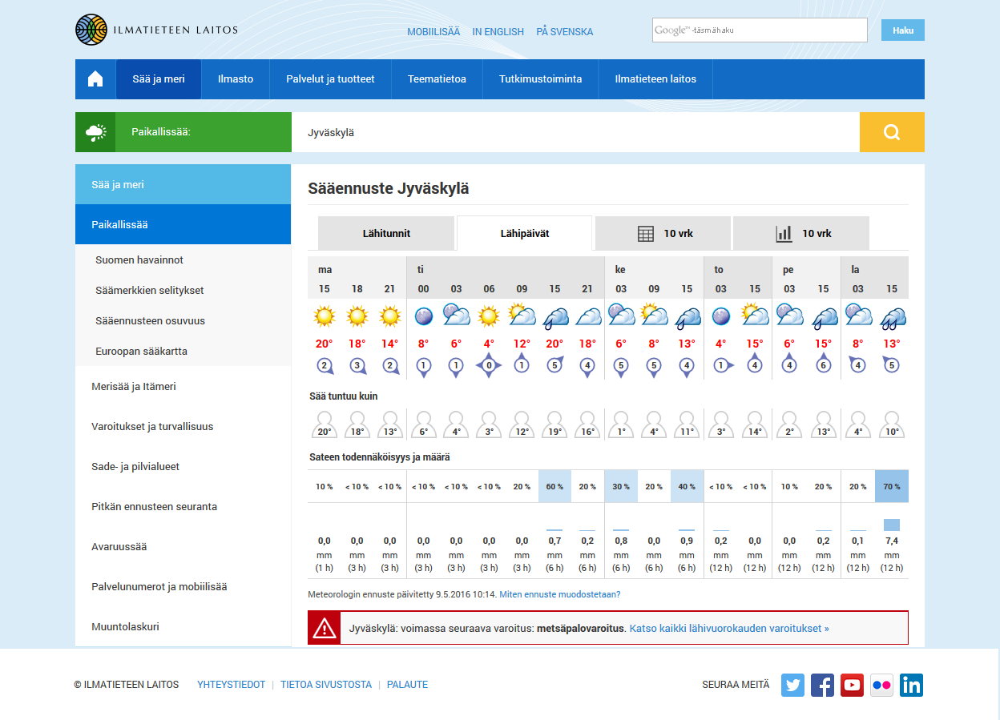

TIEA218 (Web-sovellukset) -kurssin viikkotehtäviä
Kaikki ohjelmointiprojektini löytyvät täältä.
Tekijä: Toni Pikkarainen
Viikkotehtävä 1: HTML5 ja CSS3
Tehtävänä oli toteuttaa ulkoasultaan ao. kuvan mukainen web-sivu. Linkkien ei tarvinnut toimia eikä muutakaan toiminnallisuutta tarvinnut toteuttaa. Lähinnä huomio kohdistettiin asemointiin, oikeisiin väreihin ja fontteihin. Sivu on myös responsiivinen eli selainikkunan leveyden mennessä tarpeeksi pieneksi, vasen navigointipalkki siirretään sivun alaosaan.
Arvosana: 5
Viikkotehtävä 2: Javascript ja DOM
Tehtävänä oli toteuttaa javascriptillä Halma-peli. Toteutuksessa ei saanut käyttää mitään ulkoisia kirjastoja (esim. jQuery, AngularJS...) eikä myöskään kutsua mitään palvelimelle tehtyjä sovelluksia. Myöskään annettua yksinkertaista HTML-pohjaa ei saanut muokata vain kaikki muutokset piti tehdä manipuloimalla DOM:ia javascriptillä.
Arvosana: 4
Viikkotehtävä 3: Python ja CGI-ohjelmointi
Tehtävänä oli toteuttaa python-kielellä CGI (rajapinta web-sovelluksien tekemiseen) -ohjelma, joka luo viikkotehtävä 2:n mukaisen ruudukon. Pelin logiikkaa ei tarvinnut toteuttaa, riitti, että nappuloita voi siirrellä ruudusta toiseen. Nappulat sai myös sijoittaa ruudukon vasempaan ja oikeaan reunaan.
Tehtävässä oli tarkoituksena ymmärtää HTTP-protokollan tilattomuus ja kiertää tätä sopivilla keinoilla. Tiedostoon ei saanut tallentaa mitään, eikä käyttää evästeitä ja sessioita.
Web-sivun tila pidetään toteutuksessa yllä piilokenttien avulla ja viemällä ohjelmaa uudestaan kutsuvissa linkeissä ohjelmalle sopivia parametreja.
Arvosana: 5
Viikkotehtävä 4: Flask, sessiot ja tietokannat
Tehtävänä oli toteuttaa videovuokraamon käyttöliittymä python-kielisenä flask-sovelluksena. Tietojen tallentamiseen käytetään palvelimella olevaa SQLite3-tietokantaa. Nyt sovelluksessa sai käyttää myös sessioita.
Käyttöliittymässä voi tällä hetkellä lisätä vuokrauksia, lisätä elokuvia, poistaa elokuvia ja muokata elokuvia. Lisäksi elokuvia voi listata näkymään eri ominaisuuksien perusteella järjestettynä (arvio, hinta, julkaisuvuosi, vuokrausmäärä).
Kirjautuminen:
käyttäjätunnus: tiea218@foobar.example
salasana: tiea218
Arvosana: 5
Viikkotehtävä 5: Ajax ja jQuery
Toteutettiin edellisviikon videovuokraamon käyttöliittymä yhden sivun web-sovellukset. Asiakaspäässä toteutukseen käytettiin jQuery-kirjastoa ja tiedot haettiin ja päivitettiin palvelimelta/palvelimelle AJAX (Asynchronous JavaScript and XML) -kutsuilla.
Tietokantana oli edelleen relaatiotietokanta ja tietokannan hallintajärjestelmänä SQLite3. Ohjelmointikielenä python.
Kirjautuminen:
käyttäjätunnus: tiea218@foobar.example
salasana: tiea218
Arvosana: 5
Viikkotehtävä 6: web2py ja Google App Engine
Toteutettiin edelleen sama videovuokraamon käyttöliittymä, mutta nyt se tehtiin web2py-sovelluskehyksen avulla. Sovellus julkaistiin Google App Enginellä, joka on Googlen tarjoama pilvipalvelualusta web-sovellusten kehittämiseen ja julkaisuun. Ulkoasun luomisessa on hyödynnetty Bootstrap-kirjastoa. Ohjelmointikielenä python.
Tietokantana oli Googlen tarjoama NoSQL-tietokanta. Tässä tehtävässä joutui tietokantakyselyitä siis muodostamaan ohjelmallisesti, koska kaikki relaatiotietokannassa toimivat SQL-lauseet (esim. join) eivät tässä tapauksessa toimineetkaan.
Kirjautuminen:
Google tunnuksilla.
Arvosana: 4
Viikkotehtävä 7: React.js
Tässä tehtävässä toteutettiin vielä videovuokraamon käyttöliittymä React.js-sovelluksena. Yksi Reactin tavoite on tehdä mahdollisimman yleiskäyttöisiä komponentteja. Tässä tehtävässä sain tehtyä yleiskäyttöisen select-komponentin, jolle viedään halutut propsit tilanteesta riippuen. Tein myös yleiskäyttöisen vuokraajan lisäys -komponentin, jota tehtävässä on käytetty myös vuokraajan muokkaamiseen.
Tässä tehtävässä ainoastaan haetaan data tietokannasta eli mitään päivityksiä ei työnnetä takaisin palvelimelle. Tiedot haetaan palvelimelta AJAXilla käyttäen jQuery-kirjastoa. Käyttäjän kannalta näyttää, että muutokset tallentuvat palvelimelle, sillä muutokset tallennetaan selaimen localStorageen.